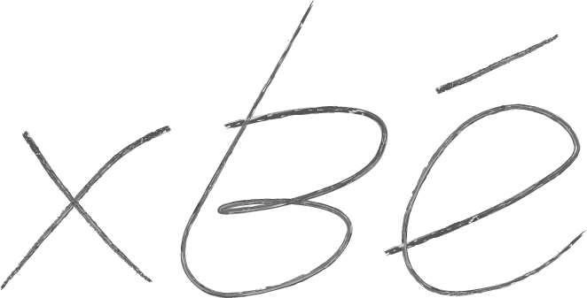

Cuando asomo mi cabeza
a la ventana, veo el mar.
Un vaivén ensimismado
traen las olas al llegar
a la arena blanca
que cubre la costa.
A la arena blanca
que nos vio nacer.
Todo es tan pequeño,
cuando estás arriba:
todo lo que somos,
algún día se irá.
Nunca volveremos
por donde llegamos.
Nunca desandamos
nuestro caminar.
Como el tiempo pasa,
nosotros pasamos.
Somos como el agua
que viene y se va.
Y así como el agua,
un día tú llegaste
y así como el agua,
un día tú te irás.
